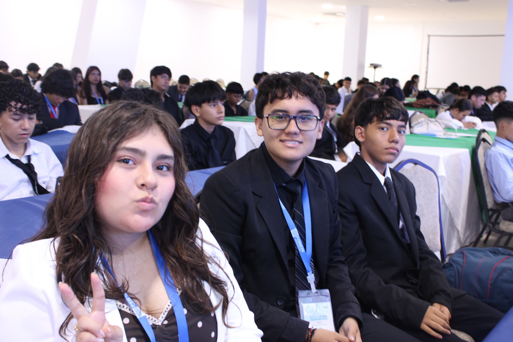
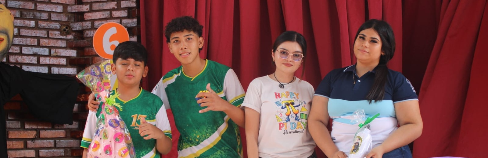
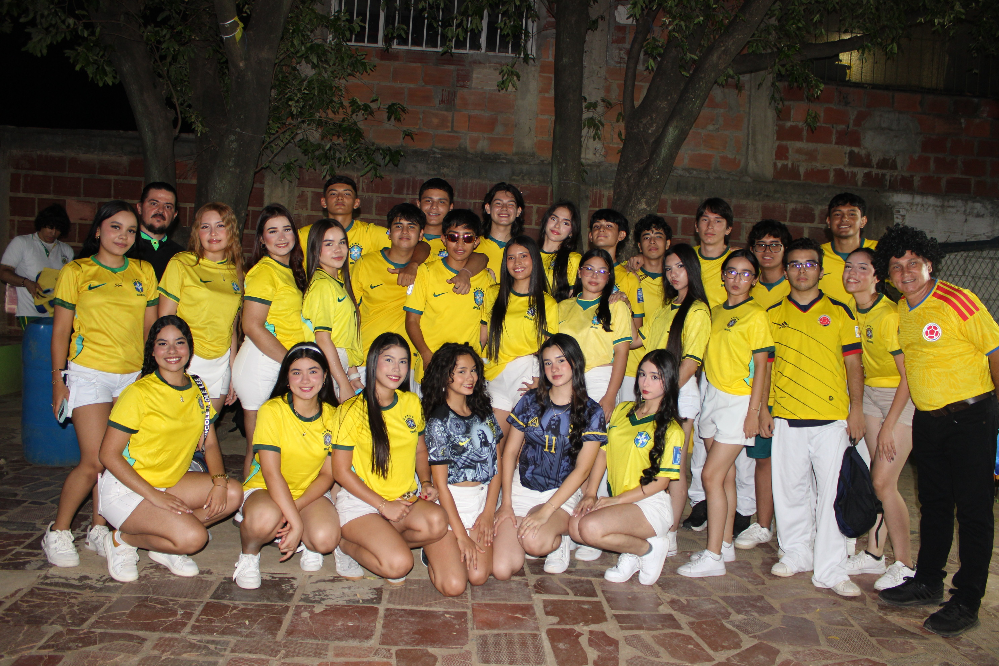

Académico
Archivo 2026 • Tinta Propia
Este espacio recoge historias, eventos, logros y experiencias que hacen parte de la vida diaria del Colegio San José de Peralta.
Desde desafíos académicos, deportes, arte y comunidad, estas notas muestran la variedad de voces que forman parte del periódico escolar.
Académico
Deportes

Cultura
Cultura y lectura · 2025
En septiembre de 2025, la Alcaldía destacó sus jornadas de lectura para niñas y niños en la Comuna 7, con actividades para expresar ideas, escuchar y practicar valores como la empatía y la amistad.
Fuente: Alcaldía de Cúcuta
Deportes

Cultura

Académico
Obras para la comunidad · 2023
En junio de 2023, el municipio informó que la intervención, esperada por más de 13 años, benefició a más de 350 familias. Entre los sectores mencionados está Juan Atalaya, segunda etapa.
Fuente: Alcaldía de CúcutaParticipación ciudadana · 2024
En diciembre de 2024 se conformó un comité de gestión ciudadana con líderes, JAC, escuelas y clubes deportivos para participar en el uso, cuidado y conservación del escenario.
Fuente: Alcaldía de CúcutaEspacio público · 2026
La Alcaldía informó en febrero de 2026 que legalizó 49 predios de uso público durante 2025. En la lista aparecen el Parque Juan Atalaya, La Concordia y la Cancha La Primera. La legalización permite gestionar inversiones; no significa que las obras ya se hayan realizado.
Fuente: Alcaldía de CúcutaEducación y territorio · 2025
En noviembre de 2025, la Alcaldía recibió el trabajo de una estudiante de Arquitectura de la UFPS, con información catastral y registral. El municipio señaló que el insumo apoyaría el proceso de titulación gratuita previsto para 2026 en sectores de varias comunas, incluida parte de la 7.
Fuente: Alcaldía de CúcutaSeguridad digital · 2026
El 8 de abril de 2026, la Alcaldía de Cúcuta informó que realizó jornadas sobre ciberacoso, grooming, suplantación de identidad y estafas en internet en instituciones educativas de la ciudad.
Fuente: Alcaldía de CúcutaEducación digital · 2025
En octubre de 2025, la Secretaría de Educación reportó la entrega de materiales y kits de aula, junto con una demostración de la plataforma educativa TOMi para docentes.
Fuente: Alcaldía de CúcutaInternet en las escuelas · 2025
En octubre de 2025, la Alcaldía describió un proyecto por fases para conectar sedes rurales por satélite, llevar fibra a otras instituciones y mejorar redes. En la sede Inmaculada del Colegio Camilo Torres, reportó una zona de internet que atendía a más de 230 niños. El plan general seguía en ejecución.
Fuente: Alcaldía de CúcutaTecnología para la ciudad · 2024
En septiembre de 2024, la Alcaldía informó que comenzaba a implementar esta tecnología para apoyar la revisión de vías, infraestructura y mobiliario urbano. El anuncio describió el inicio del proceso, no su despliegue total.
Fuente: Alcaldía de CúcutaBosques y Amazonía
La deforestación y la fragmentación de los bosques amenazan hábitats, fuentes de agua y formas de vida.
Estrategia: restaurar áreas degradadas con especies nativas, apoyar iniciativas comunitarias y elegir productos de origen legal y sostenible.
Información del IDEAMAgua y páramos
Estos ecosistemas de alta montaña almacenan y regulan agua; su vegetación es especialmente sensible a las alteraciones.
Estrategia: ahorrar agua, no arrojar residuos ni encender fogatas en áreas naturales y respetar los senderos y zonas protegidas.
Información de MinAmbienteResiduos y plásticos
El consumo de productos desechables y la separación incorrecta de residuos aumentan la presión sobre rellenos y ecosistemas.
Estrategia: separar los residuos en la fuente, reutilizar envases, evitar plásticos de un solo uso y compostar los residuos orgánicos cuando sea posible.
Guías ambientales de MinAmbienteFauna y flora
La pérdida de hábitat y el tráfico ilegal de fauna ponen en riesgo especies y el equilibrio de los ecosistemas.
Estrategia: nunca comprar fauna silvestre, preferir plantas nativas en jardines y avisar a las autoridades ambientales sobre el tráfico ilegal.
Parques Nacionales NaturalesAún no hay noticias en esta sección. Vuelve pronto para descubrir nuevas historias.
Voces del colegio

Voces estudiantilesUn espacio para escuchar
Muy pronto compartiremos aquí las conversaciones con estudiantes de nuestra comunidad: sus historias, lo que les inspira y las ideas que quieren compartir.